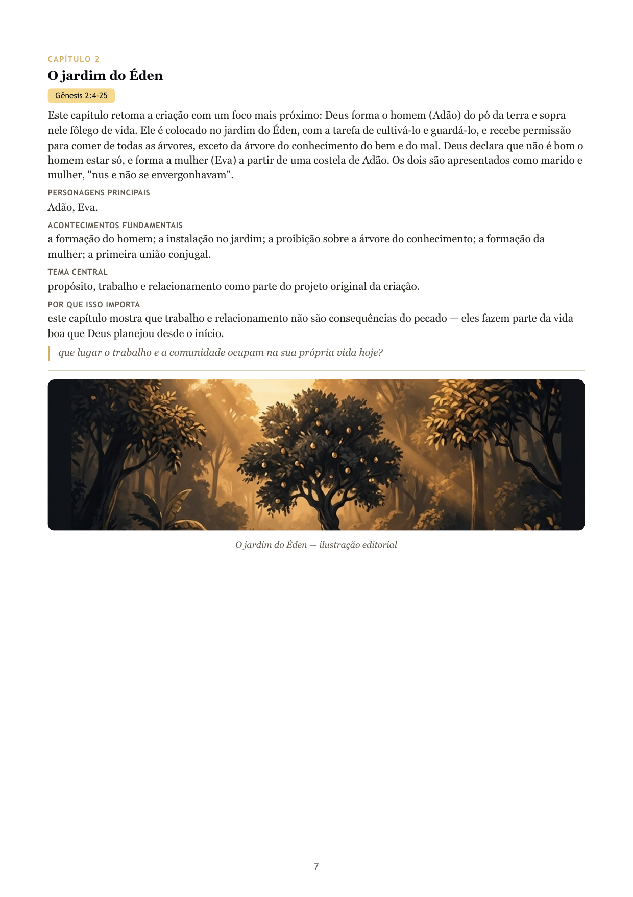
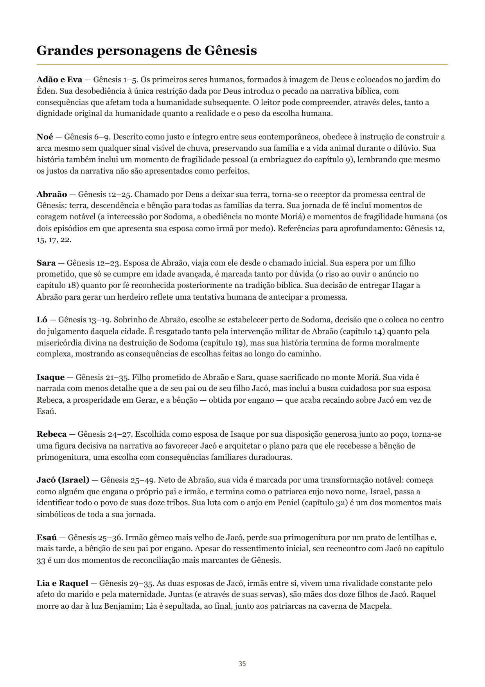
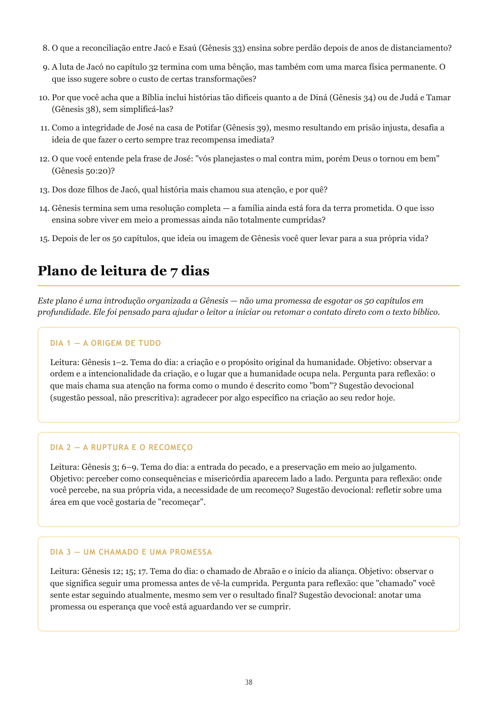

Descubra Gênesis como você nunca viu.
Uma jornada ilustrada pelos 50 capítulos do primeiro livro da Bíblia, com resumos claros, referências bíblicas e recursos para aprofundar sua leitura.
Entender Gênesis é começar a compreender a grande narrativa bíblica.
Gênesis apresenta temas fundamentais que atravessam toda a Bíblia: criação, humanidade, pecado, promessa, fé, família, reconciliação e continuidade da história bíblica. Este guia foi criado como companhia de leitura — para ajudar você a acompanhar essa jornada com mais clareza, não para substituir o tempo que você já dedica às Escrituras.
Conheça o Guia Ilustrado de Gênesis
Um recurso complementar à leitura das Escrituras, organizado para tornar os 50 capítulos de Gênesis mais fáceis de acompanhar, consultar e estudar.
- Resumos originais dos 50 capítulos de Gênesis
- Referências bíblicas organizadas por capítulo
- Introdução ao livro de Gênesis
- Perfis dos principais personagens
- Linha do tempo narrativa
- Grandes temas de Gênesis
- Perguntas para estudo e reflexão
- Plano de leitura de sete dias
- Glossário de termos bíblicos
Páginas reais do guia
Capturas diretas do PDF produzido — não são simulações.



Conheça o guia antes de comprar.
Baixe gratuitamente uma amostra de três páginas e conheça a proposta visual e editorial do Guia Ilustrado de Gênesis.
Baixar amostra gratuitaO que torna o guia útil
Organização
Os capítulos ficam mais fáceis de consultar, um a um, sempre que precisar voltar a eles.
Clareza
Resumos diretos ajudam a acompanhar a narrativa sem perder o fio entre os capítulos.
Contexto
Personagens e temas são apresentados dentro da história, não como fichas soltas.
Continuidade
Perguntas e um plano de leitura de 7 dias ajudam a dar o próximo passo no estudo.
O guia é um recurso complementar — ele não substitui a leitura da Bíblia, não resolve todas as dúvidas teológicas e não garante uma experiência espiritual específica.
Guia Ilustrado de Gênesis — A Origem de Tudo
Uma jornada visual pelos 50 capítulos do primeiro livro da Bíblia. Formato PDF digital, para ler no celular, tablet ou computador.
Perguntas frequentes
É um e-book em PDF que apresenta os 50 capítulos de Gênesis de forma organizada e visual, com resumos, referências bíblicas, personagens, temas e recursos de estudo — um complemento à leitura da Bíblia.
Sim. Todos os 50 capítulos de Gênesis são contemplados individualmente, incluindo as genealogias, com resumo, personagens, acontecimentos e tema central próprios de cada um.
Não. O guia é um recurso complementar de estudo, pensado para acompanhar sua leitura das Escrituras — não para substituí-la.
Em PDF digital, com texto selecionável, próprio para leitura em celular, tablet ou computador.
Use o botão "Baixar amostra gratuita" nesta página — o download começa direto, sem necessidade de cadastro.
Essa informação depende da plataforma de checkout oficial, que ainda está sendo configurada. Assim que estiver ativa, o processo de entrega será detalhado aqui.
Sim — o PDF foi produzido pensando em legibilidade em telas pequenas, além de computador e impressão.
O canal oficial de contato ainda está sendo configurado. Esta resposta será atualizada assim que um e-mail ou canal estiver definido.
Sua jornada por Gênesis começa aqui.
Explore as histórias, os personagens e os grandes temas do primeiro livro da Bíblia com um guia visual criado para acompanhar sua leitura das Escrituras.